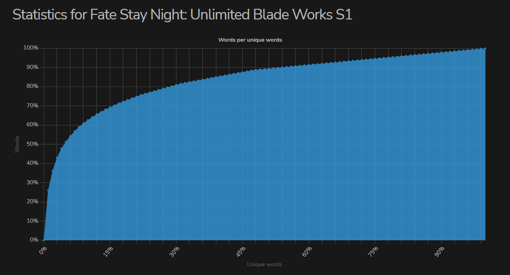

Word Frequency
Due to the way language is naturally structured, we tend to use the most common 20% of words 80% of the time. What this means for you as a learner is that you should always prioritize frequent words in your learning.
For example, if you were an English learner who had to decide between adding old and antediluvian to your flashcard deck, I would always suggest you add the former.
Here we can see some vocabulary statistic for the series Fate Stay Night: Unlimited Blade Works. On the Y-Axis we have the absolute number of words that appear in the series. On the X-Axis we have the percentage of unique vocabulary.
You'll notice that, as you learn more unique vocabulary, you get diminishing returns in terms of absolute comprehension. Eventually, you hit a point where learning more words seems to do little for your comprehension. We will discuss strategies for these advanced learners later on. For beginners, this means you need to prioritize common words. Go for low-hanging fruit.